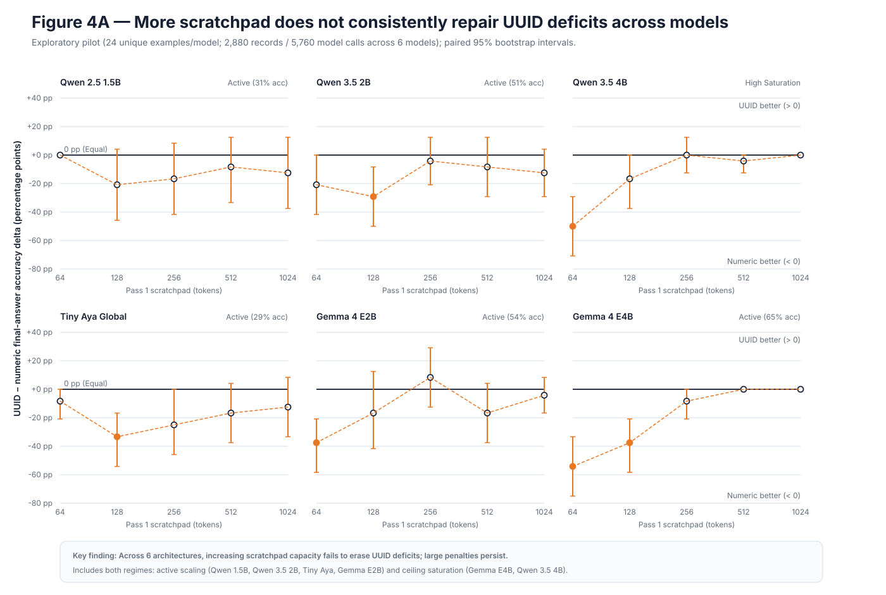
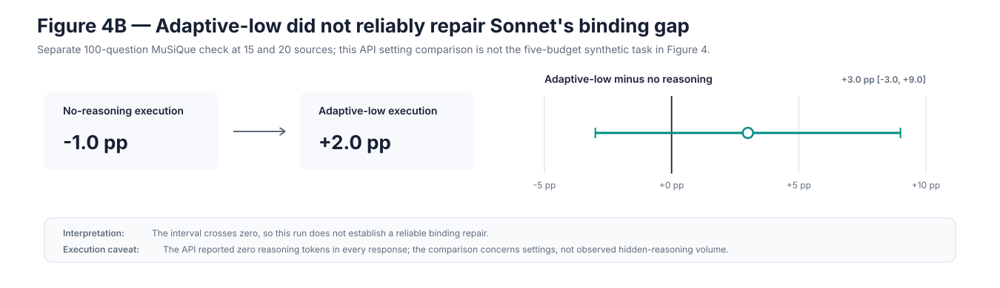

Hypothesis
The UUID-minus-numeric interaction becomes more positive with each budget doubling.
Stage 05 · budget ablation
A two-pass protocol varies the visible reasoning budget from 64 to 1,024 tokens, then gives a second pass only the scratchpad to produce the final answer.
Result in one line. Five of six expanded confirmatory cohorts show positive low-to-high recovery, but tight-budget deficits, reversals, ceiling effects, and Tiny Aya's non-replication rule out a universal repair.
If high-entropy IDs consume internal bookkeeping capacity, increasing the explicit scratchpad should steadily close the UUID-minus-numeric accuracy gap before task ceiling.
The UUID-minus-numeric interaction becomes more positive with each budget doubling.
Non-monotonic changes, intervals spanning zero, persistent high-budget deficits, or convergence explained by both arms reaching ceiling.
2,880 generations
The former eight-model view remains available only through --cohort all; LFM checkpoints are excluded from the primary pilot artifact.
240 semantic examples · 4,800 generations
Each of six models receives 40 entity-resolution cases across numeric, compact, UUID, and UUID-no-reproduction arms at five budgets. Effects use a 10,000-replicate stratified paired bootstrap.
800 generations
These black-box comparisons test API execution settings. They do not expose hidden reasoning traces or internal mechanisms.
low-to-high intervals above zero
40 per local model
64 to 1,024 visible tokens
| Model | Low→high interaction | Slope per doubling | Reading |
|---|---|---|---|
| Tiny Aya | +3.7 [−13.7, +20.0] | −0.3 [−5.5, +4.8] | Pilot recovery did not replicate |
| Qwen 2.5 1.5B | +18.8 [+5.0, +33.8] | +5.0 [+1.0, +9.0] | Positive recovery with residual non-monotonicity |
| Gemma E2B | +31.2 [+11.2, +52.5] | +14.0 [+8.0, +20.0] | Sharp constrained-budget failure and reversal |
| Gemma E4B | +50.0 [+45.0, +55.0] | +20.0 [+18.5, +21.5] | Fast convergence to ceiling |
| Qwen 3.5 2B | +18.8 [+5.0, +32.5] | +5.3 [+0.5, +10.0] | Positive but non-monotonic recovery |
| Qwen 3.5 4B | +83.8 [+76.2, +91.2] | +24.2 [+21.5, +26.7] | Large recovery after severe low-budget deficit |


Visible scratchpad tokens are not hidden chain-of-thought. The experiment measures a controlled two-pass interface, not an inaccessible internal reasoning process.
At tight budgets, UUID penalties can be extreme. Five models recover across the full budget range, often because the arms approach ceiling, yet intermediate budgets remain non-monotonic and Tiny Aya does not reproduce its pilot slope. Removing reproduction can help in some cells and hurt in others.
Additional visible work space can mitigate identifier costs in several architectures, but it is not a uniform substitute for a cleaner model-facing identifier interface.
The six-model pilot calibrated the task and is reported separately. Confirmation uses a new seed and a uniform entity-resolution design; the Qwen 3.5 runs are restricted to that task, use a corrected 4,050-token prompt bound, and Qwen 2.5 follows the documented deterministic selection rule. Frontier APIs remain behavior-only.
results/processed/stage5_six_model_pilot.jsonFINDINGS_STAGE5_CONFIRMATORY.mdresults/processed/stage5_confirmatory.jsonresults/audit/stage5_qwen_selection_rule.mdresults/processed/frontier_reasoning_summary.json